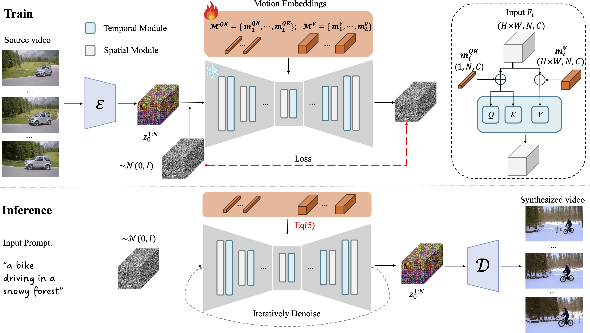
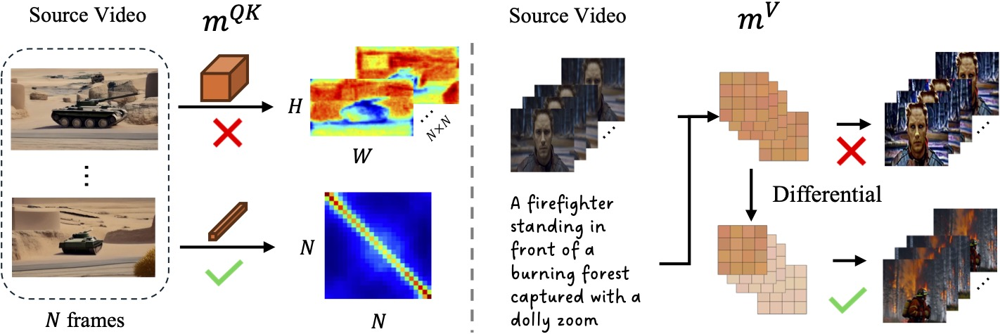

In this research, we propose Motion Embeddings, a set of temporally coherent embeddings derived from a given video. Our approach provides a compact and efficient solution to motion representation, utilizing two types of embeddings: a Motion Query-Key Embedding to modulate the temporal attention map and a Motion Value Embedding to modulate the attention values
Left: For the Motion Query-Key Embedding, which influences the attention map, we exclude the spatial dimensions. Including them would cause the attention map between frames to capture the object's shape (e.g., the shape of the tank in the original video is visible in the attention map). Right: Following the concept of optical flow, we apply a differential operation to the Spatial-2D Motion Value Embedding, removing static appearance and preserving dynamic motion.

NEED UPDATE
@misc{wang2024motion,
title={Motion Inversion for Video Customization},
author={Luozhou Wang and Guibao Shen and Yixun Liang and Xin Tao and Pengfei Wan and Di Zhang and Yijun Li and Yingcong Chen},
year={2024},
eprint={2403.20193},
archivePrefix={arXiv},
primaryClass={cs.CV}
}